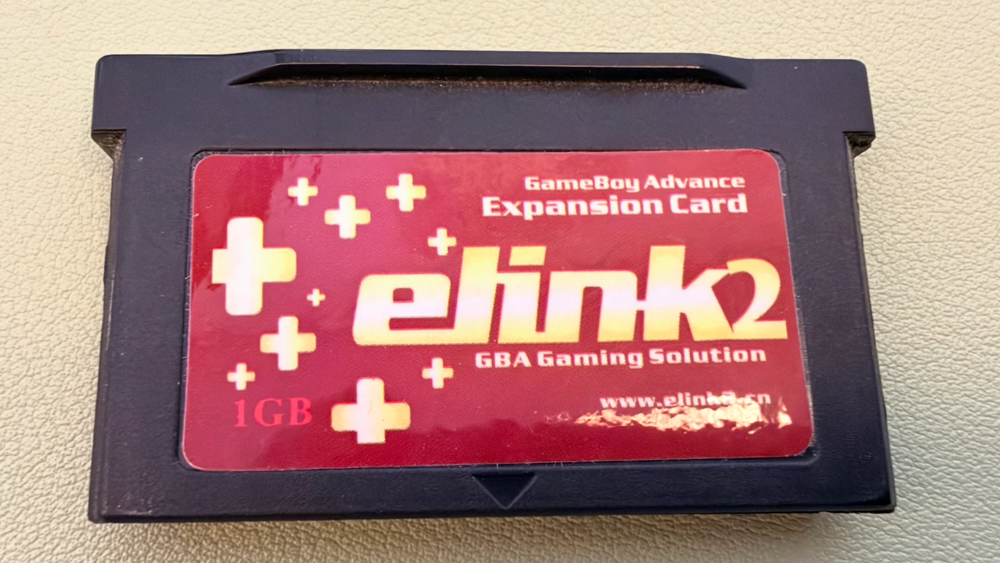
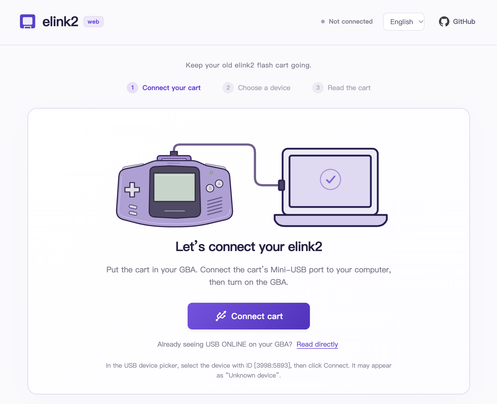
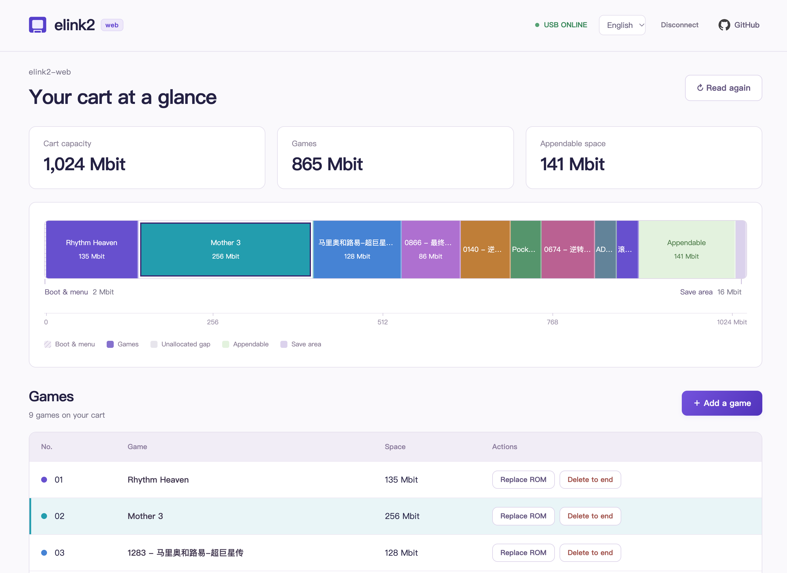
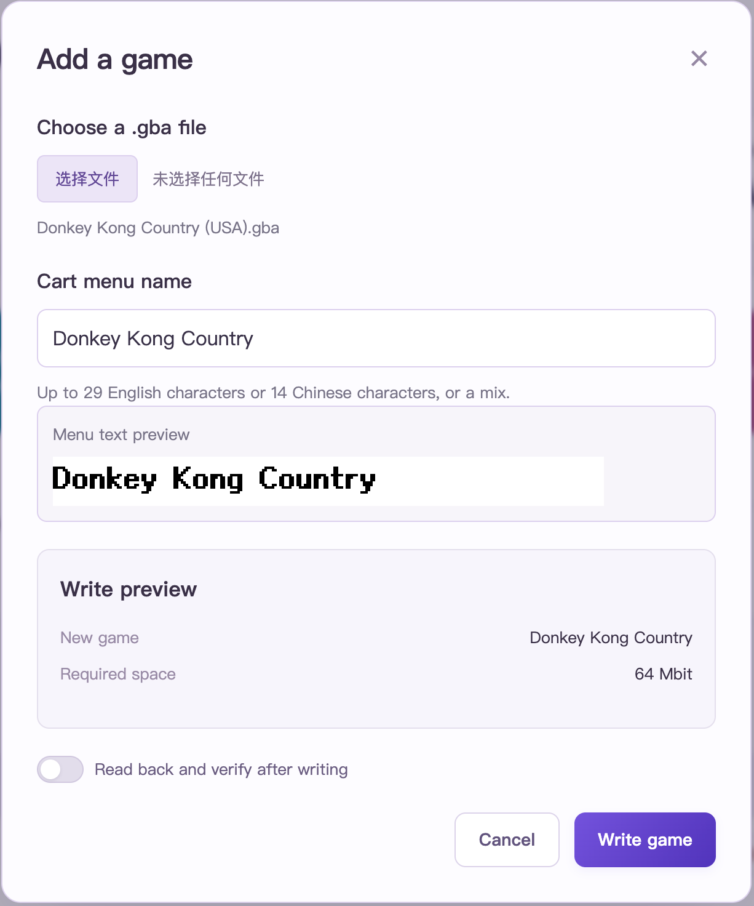

Recently, I dug out my Game Boy Micro (GBM), along with the elink2 flash cart I used with it back in the day. I wanted to revisit some old games.
I bought this cart in 2010 for 100 yuan. More than a decade later, both the console and the cart were still around. But when I tried to swap in a few games, I ran into a problem on the computer side: the original software was a Windows application, I mostly use macOS now, and I couldn’t find a working driver.
So I asked Codex to help analyze the original software and try building a tool that would work on my Mac. After some tinkering, that became a web project: elink2-web.

Why Bother with This Old Cart?
Pure nostalgia.
The elink2 is a GBA flash cart, apparently dating back to around 2009. You write games onto the cart, then put it in a GBA to play them. Unlike later carts where you simply copy files onto a memory card, it needs a USB connection and its companion software to flash games.
The cart has long been discontinued, and there isn’t much information or discussion about it online. These days, you mostly find it on the second-hand market. For anyone who still has one, the hardware may work just fine, but the old software can get in the way of actually using it.
That was the problem I wanted to solve: keep using the cart I already owned on a modern computer, see what was on it, and swap in a few games.
It also seemed like an interesting way to see what AI could do. With a typical web app or API project, there are usually docs and established libraries to work from. Here, I had an old USB device, its original Windows software, and a handful of software screenshots from the internet. I was curious whether Codex could help piece together a way forward from that.
From the Original Software to Hardware Testing
I started with a macOS prototype. At first, Codex suggested finding a Windows machine, running the original software, and capturing its USB traffic to see what it sent to the cart. But I dug my heels in: I only had Macs, and I didn’t want to install a virtual machine. So Codex had to dig into the Windows program itself, work out the initialization, USB communication, and game menu details, then test them step by step on my cart.
My part was to remember how I used the original software back then and give Codex a few clues. Whenever it needed a hardware test, I would plug or unplug the USB cable, turn the GBA off and on, and report what appeared on the screen.
We started with connecting and reading. First, we got USB ONLINE to appear on the GBA’s screen, then read the menu and parsed the game list. Only after that did we try writing and replacing games. After each write, we read the data back for comparison and checked that neighboring regions and saves hadn’t been affected. Finally, I unplugged the USB cable and restarted the GBA to check that the menu looked right and the game actually booted.
Bit by bit, the prototype could write a game into the last slot, hide and restore menu entries, and replace a game within its allocated space on my cart. We also kept analysis notes and operation logs so we could look back when something went wrong.
Why Turn It into a Web Tool?
Once the macOS prototype worked, another thought struck me: doesn’t Chrome support WebUSB? Could all of this run directly in a browser? Then there wouldn’t even be a desktop tool to install.
So I asked Codex to take the connection, reading, and game management code from the prototype and bring it into the browser. That’s how elink2-web came about.
The appeal is straightforward: with a browser that supports WebUSB, you open the page, grant access to the device, and get started. No separate desktop app to install. Game files are processed locally, and USB communication happens directly in the browser, so flashing a game doesn’t require uploading its ROM to a server.
There are browser compatibility limits, of course. The current scope is desktop Chrome and Edge. Hardware testing so far has used Chrome on both Apple Silicon and Intel MacBook Pros. Edge and other operating systems still need testing.

For the interface, I mainly wanted to make the cart’s contents easier to understand: which games are on it, how much space each takes up, where the gaps are, and how much room is left at the end. After choosing a game file, you can also preview where it will be written and the name that will appear in the cart’s menu.

Menu names turned out to be another interesting detail. Text in the cart’s menu has to be converted into bitmap glyphs; you can’t just carry the webpage’s text styling over. The tool now uses a fixed pixel font to generate those glyphs, with custom names in Chinese or English. The browser preview and the data written to the cart use the same bitmap.

Looking back, it felt like a back-and-forth between Codex and me: it analyzed the program and wrote code, I tried things on the GBA and told it what responded and what didn’t. With an old cart like this, a success message on the computer wasn’t quite enough. I only felt sure once I’d unplugged the cable, restarted the console, and seen the game actually run.
Where Things Stand
As of November 9, 2026, elink2-web can:
- Connect to the cart and read its game list.
- Show the storage layout, used space, and room available for appending games.
- Add games and replace existing games within their allocated space.
- Remove a selected game and every game after it.
- Customize cart menu names and preview their bitmap glyphs.
- Switch between Chinese and English, show operation logs, and optionally read back and verify data after writing.
Save import/export and cheats aren’t available in the web tool yet. Compatibility with more carts, firmware versions, and game saves also needs further testing. The early prototype’s hardware results mainly came from this one cart of mine.
Try It and Get the Source
Try it online: elink2.knktc.com.
Source code: knktc/elink2-web.
Cloudflare handles the site’s automatic builds and hosting, saving me the trouble of maintaining a server and deployment setup. Thanks, generous folks at Cloudflare.
If you still have an elink2 cart lying around, give it a try. If something goes wrong, open an issue on GitHub with your operating system, browser, cart details, and operation logs to help me improve compatibility.
All I wanted at the start was to put a few different games on my GBM. Now the cart I bought in 2010 works with my Mac again. Hopefully, the tool will help someone else who’s held on to theirs, too.